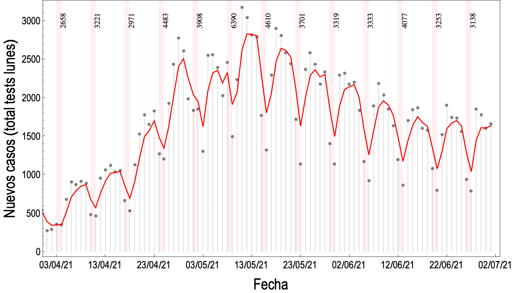
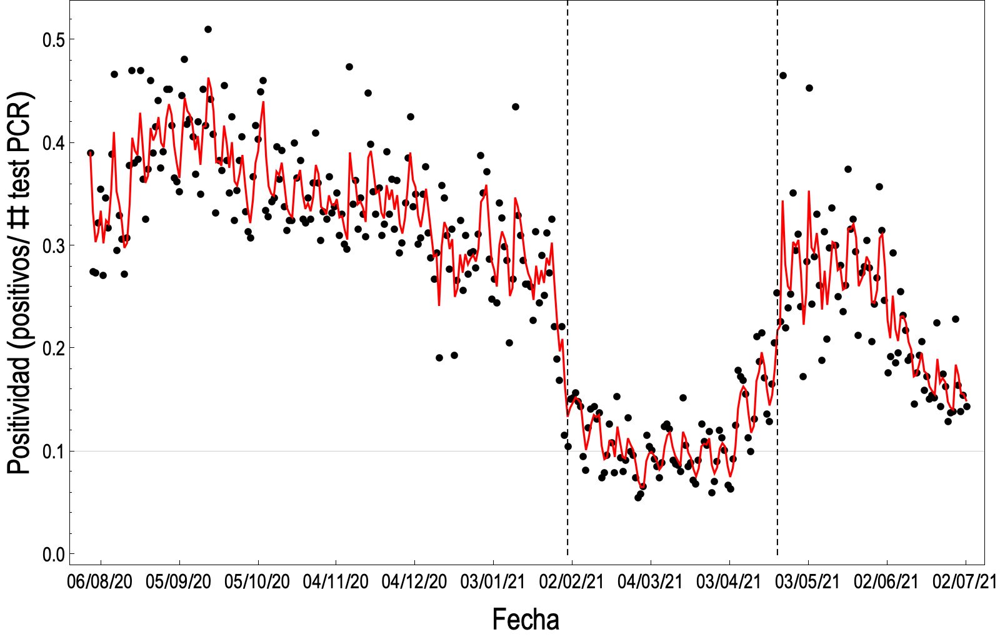
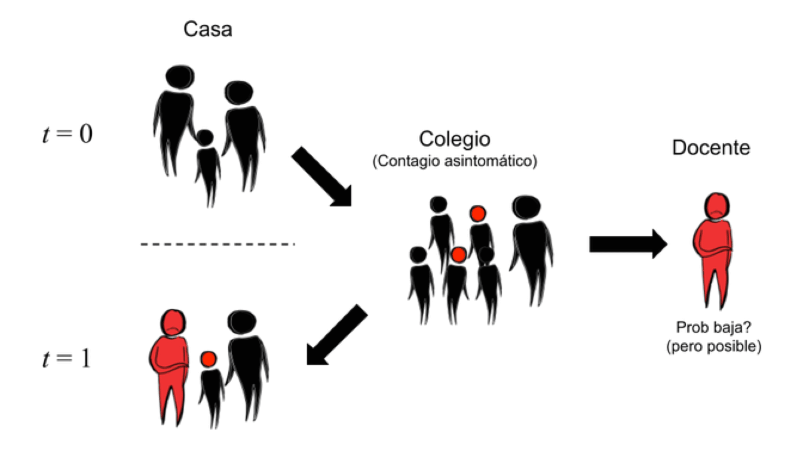
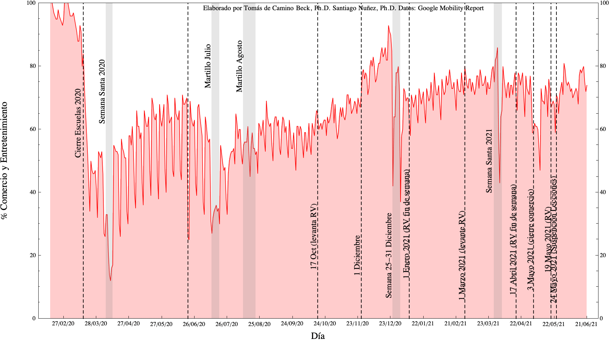

Situación COVID Costa Rica
27 Mayo 2021
Tomás de-Camino-Beck, Ph.D., Santiago Nuñez-Corrales Ph.D.
Ciudadanos Investigadores Independientes
Introducción
- Este análisis se provee a diario, para dar una posible interpretación de la información para salas de situación.
- En ciencia es normal que existan otras posibles interpretaciones que deban ser discutidas o comprobadas. En ciencias factuales la "verdad" resulta de un proceso progresivo de encontrar evidencia en favor o en contra de alguna hipótesis.
- Nuestras explicaciones representan posibles hipótesis que se fundamentan en el análisis de datos. Estamos abiertos a sugerencias, comentarios o refutaciones
- La saturación de hospitales nos trae consigo un reto importante: determinar si los datos de hospitalización llegan a un límite, debido a saturación, y ya no son efectivos en predecir la dinámica de la enfermedad
Velocidades de Hospitalización
Este análisis se basa principalmente en monitorear la velocidad de hospitalización, que se define como el promedio de pacientes que entran o salen por día del hospital (primera derivada numérica de la ocupación hospitalaria diaria) como se explica en la siguiente figura:
Si el número de nuevas hospitalizaciones es mayor al número de salidas del hospital (recuperación o fallecimiento), la velocidad de hospitalización es positiva. Si por el contrario, el número de hospitalizaciones es menor, la velocidad es negativa.
Gráfico de Hospitalizaciones

Gráfico de velocidad de hospitalización histórico

En el gráfico lo que se observa son las velocidades de hospitalización. Las olas epidémicas, se observan como una persistencia larga (de más de una semana) de velocidades de hospitalización positivas, sin ninguna observación de velocidad negativa. En la figura se observa claramente hacia finales de Junio 2020, y nuevamente a mediados de Marzo 2021 (noten áreas rojas arriba de 0).
Hay una diferencia cuantitativa y cualitativa considerable entre la primera ola que inicia en Junio del 2020, y la que inicia en marzo de 2021 como se observa en la siguiente figura comparativa,

Las velocidades en esta segunda ola epidémica comienzan a mostrar persistencia positiva a partir del 18 de Marzo de 2021, y se han mantenido velocidades positivas de hospitalizacion por dos meses de forma consistente. Las velocidades en la segunda ola crecieron con mayor velocidad que en la primera ola, y se han mantenido positivas por mayor cantidad de tiempo. La máxima velocidad de la primera ola fue de 15 pacientes por día en promedio, mientras que la nueva ola ha llegado a ser superior a 40 pacientes por día.
Gráfico de velocidad de hospitalización últimos 4 meses
Detalle de la velocidad de hospitalización en los últimos 4 meses. Es notorio que la velocidad de hospitalización parece comenzar a disminuir. La razón de la disminución se puede deber a dos factores: 1. Posible efecto de las medidas tomadas el 3 de Mayo. Sin embargo el efecto de saturación es temprano para atribuirlo únicamente a este factor, y 2. Que la saturación hospitalaria tiene como resultado un registro límite en las hospitalizaciones, dando la impresión de estabilización.

Interpretación de Gráficos y Resultados
17 Mayo 2021
- Las velocidades de hospitalización ya no están creciendo de forma acelerada, pero siguen siendo positivas
- La desaceleración puede deberse a efecto de cierre de comercio. Si es este el caso es de esperar que estas vuelvan a subir debido al relajamiento de dichas restricciones (solo se aplicaron una semana)
- Otro efecto de la desaceleración (reducción de la velocidad de hospitalización), puede deberse a la saturación de UCI. A partir del 28 de Abril ya se observó la saturación y en ese momento se observan cambios en la velocidad.
18 Mayo
- Por la forma de la curva de velocidad de hospitalización, es posible que se muestre en general un descenso, pero debido a la saturación hospitalaria. En principio,al saturarse el sistema las velocidades bajan hasta oscilar alrededor de 0.
20 Mayo
-Las velocidades de hospitalización bajan, lo que en un principio es positivo. Queda la duda si se debe a saturación hospitalaria, o algún otro factor. Las medidas del 3 de mayo indicen, sin embargo debido a que las velocidades de hospitalización comienzan a bajar antes de el tiempo en que las medidas tienen efecto, no permiten determinar con exactitud que se debe a medidas y que a saturación.
24 Mayo
- Se observa una reducción de la velocidad de hospitalización. Esto podría suceder como efecto de medidas del 3 de Mayo. Sin embargo, dado que las velocidades comienzan a bajar mucho antes del tiempo de efecto de la medida, y cerca del umbral de saturación de UCI, es difícil determinar si la reducción de velocidad se debe a las medidas, a saturación o a ambas. Si las velocidades de hospitalización no pasan a valores negativos, esto indicaría que lo que observamos es una saturación del sistema hospitalario y no una recuperación. puesto que las hospitalizaciones en general siguen en aumento (velocidades positivas)
26 Mayo
- La tendencia era a la disminución de la velocidad de hospitalización, sin embargo en los últimos días, se ha visto un contraste el cual se debe monitorear. Para el 24 de mayo por ejemplo salieron más personas del hospital de las que entraron con una velocidad negativa de -10 pacientes por días, sin embargo en los últimos dos días, han habido velocidades positivas superiores de 50 pacientes por día. Habrá que esperar al resto de la semana si es una tendencia, o un fenómeno temporal.
R efectivo
El R efectivo se calcula utilizando la fórmula del Centro Centroamericano de Población. El R efectivo es una aproximación de lo que se conoce como tasa de contagio, y permite saber, retrospectivamente, cual ha sido el proceso de contagio en la población para llegar a los valores acumulados presentes. Un R efectivo mayor que 1 indica crecimiento, y uno menor que 1, decrecimiento de contagios.

Los puntos en la gráfica representan los valores de R efectivo calculados a partir de la información de casos nuevos diarios. La curva gris clara, es un filtro de media exponencial móvil con alfa = 0.25. La curva roja es un filtro de Gauss a 7 días.
Interpretación de Gráficos y Resultados
14 de Mayo
- R efectivo es poco sensible si los datos de nuevos casos no representan un muestreo poblacional
- La tendencia general de R efectivo ha sido la de subir a partir del inicio de clases y se ha mantenido en promedio por arriba de 1.
-Las oscilaciones de R efectivo, se deben a el efecto de “fines de semana” donde un numero menor de personas espera a un día de semana para ir a un centro médico, si tiene sospechas de estar contagiado.
17 de Mayo
- Si se revisa el valor de R usando el filtro de Gauss se observan valores de R efectivo menores que 1. Este efecto es normal a inicios de semana y se debe a reducciones en fin de semana de casos nuevos. Hay que esperar más días (pasado miércoles) para interpretar el valor de R
20 Mayo
- El mejor momento para dar una mirada a R es jueves o viernes, que reducen el efecto de reducción de casos en fines de semana. Como se puede observar en la gráfica, se mantiene en promedio por encima de 1, con fuertes oscilaciones. Ha disminuido desde su omento más alto, y la reducción instantánea de R puede deberse a factores de método de testeo, como a efectos de las medidas del 3 de Mayo.
21 Mayo
- Como lo habíamos indicado, R tiende a ser muy sensible al reporte de casos nuevos, y por eso oscila entre valores mayores y menores que una de forma constante (ver puntos grises en figura).
- Para interpretar R se debe ver más allá de unos días, y se utiliza alguna función que suaviza y promedia de forma ponderada por varios días. Al 21 de mayo, se observa que R en realidad, en promedio, nunca ha estado por debajo de 1 desde inicio de Marzo (curva roja)
- La curva gris nos muestra los variable que es R, por efectos de feriados y fines de semana. Los fines de semana de sub-reporta, y luego se sobre reporta, lo cual genera grandes variaciones en R.
Gráficos Descriptivos
Los siguientes son gráficos de los datos primarios tal y como se obtienen de la base de datos del ministerio de salud. No representan ningún cálculo espacial más que para describir la situación actual.
Nuevos Casos

La curva roja es la media exponencial móvil con alfa = 0.25. El siguiente gráfico muestra los últimos 3 meses. Las líneas rojas marcan domingo y lunes que son los días que se reportan menos casos en la semana, y el número indica el número total de tests reportados el lunes. Al ser una estrategia reactiva, muestra como el número de test se asocia directamente al número de positivos (aproximadamente un 30%)

Positividad
La positividad es la proporción de casos positivos con COVID, con respecto al total de pruebas realizadas. En Costa Rica, las pruebas reportadas diarias, no representan directamente los casos “del día”, sino que pueden acumular las pruebas realizadas en varios días.

La curva roja es la media exponencial móvil con alfa = 0.25. Es incierta la razón de porque a finales de febrero hacia finales de aril, hay un período de menor positividad, para luego regresar a los altos niveles de positividad (promedio 30%)
Fallecimientos Diarios

La curva roja es la media exponencial móvil con alfa = 0.25
20 Mayo
-Los fallecimiento siguen la tendencia de mantenerse altos. Puede deberse a que nuevos casos aparecen con síntomas más severos, o por la situación de saturación de UCI, que complica el tratamiento, aumentando las fatalidades.
21 Mayo
- Las cifras diarias de fallecidos sigue manteniéndose por sobre los valores de fallecimientos de la ola del 2021.
Evidencia de Efecto de Año Lectivo
Utilizando análisis multiresolución de ondeletas (metodología explicada acá), encontramos evidencia estadística de que el inicio de la ola epidémica, se asocia al inicio del período escolar. Ver el siguiente gráfico,

Como se observa en el gráfico, con un 90% de confianza encontramos una “zona” donde se esperarían encontrar los factores que se relacionan con el inicio de la ola de Marzo 2021 (una aceleración de velocidades de hospitlaización). Aunque no se puede concluir que es el único factor, pues existen otros factores como estacionalidad, variantes de COVID, etc. tampoco se puede descartar, y debe considerarse como un posible factor que influyó en la ola de marzo 2021.
Hay dos posibles mecanismos por los cuales las escuelas y colegios contribuyen al aumento de casos (hospitalizaciones), 1. contagio asintomático, y 2. Aumento de actividad y movilidad y mezcla asociada a actividad escolar
Contagio asintomático
El contagio asintomático consiste en que estudiantes, que tienen una alta probabilidad de no manifestar síntomas, pueden transmitir a otros estudiantes y a docentes de forma “silenciosa” el virus, esta transmisión termina en último caso en una infección en el hogar, en el cual no se puede determinar de donde se origina,

Incluso un nivel bajo de infección en estudiantes es suficiente para poder propagar el virus de forma silenciosa. Al decir silenciosa, nos referimos a que no es rastreable el origen de la infección en el hogar, es decir, aparece alguien infectado en el hogar y el origen no se puede determinar, si fue el adulto quién se contagió primero y trajo el virus a casa, o si fue el estudiante (personas menores sin síntomas no son testeados en Costa Rica).
Movilidad y mezcla asociada
En el año 2020, la movilidad se redujo considerablemente debido al cierre de escuelas y colegios (ver figura en sección Movilidad Según Google Mobility). A días de suspender el ciclo escolar la movilidad se redujo en un 50%. Adicionalmente, la movilidad debida a actividad escolar genera mezcla entre diferentes comunidades, debido a los desplazamientos de los y las ciudadanas para llevar a sus hijos e hijas a las escuelas y colegios.
Aunque no hay nada garantizado, estimamos que una suspensión temporal puede contribuir a una reducción de entre el 10 y 15%, el cual, en casos de alta velocidad de hospitalización, puede ser importante para controlar la propagación del virus.
Proyección Hospitalización a 7 días
Proyectar con precisión cuando existe tanta incertidumbre como en la dinámica de COVID, es muy difícil. Mucho más que se buscan proyecciones que sean útiles, y escenarios que permitan tomar decisiones. La proyección de la ocupación hospitalaria puede servir para determinar una tendencia a corto plazo. Monitoreando el peor caso permite por lo menos determinar la demanda a 7 días en el hospital.
En esta proyección, se utilizan las velocidades de hospitalización de 7 días previos, para en un esquema de MCMC (Markov Chain Monte Carlo Sampling), proyectar posibles escenarios de ocupación hospitalaria. En espacial se debe poner atención a los valore más altos obtenidos a partir de 1 millón de simulaciones.

Los intervalos de confianza se obtiene a partir del bootsptrapping de 1 millón de simulaciones.
21 Mayo
- Las cifras de hospitalización siguen manteniéndose dentro de los valores proyectados. El intervalo al 21 de mayo proyectada entre 1418 y 1575 (1427 para viernes 21 de mayo). Esto indica que todavía se proyecta una tendencia en general creciente
26 Mayo
- Las proyecciones aunque muestran la posibilidad de disminución en las hopitalizaciones, y en los últimos días han estado por debajo del promedio de proyecciones, también advierten la posibilidad de crecimiento, que es lo que se observa en los últimos días.
Movilidad Según Google Mobility
Este gráfico se actualiza a medida que Google Mobility publique los datos (cada semana aproximadamente). El gráfico muestra los datos para Costa Rica, de movilidad basada en la utilización de servicios de google en teléfonos. Los datos Google los publica a nivel nacional y no de cantón o distrito.

Actualizado al 22 de Mayo del 2021.
Gráficos desde enero 2021 (Rosado indica fines de semana)
Movilidad en paradas de transporte público

Movilidad en Comercio y Entretenimiento

Interpretación de Gráficos y Resultados
14 mayo 2021
- El cierre de comercios del 3 Mayo tuvo un impacto importante en la movilidad relacionada al comercio, sin embargo no alcanzó los niveles de reducción de movilidad que se tuvieron debido al martillo de Julio o Agosto.
- El fin de semana 8 y 9 de Mayo hubo una reducción importante en la movilidad
17 mayo 2021
-La mayor reducción de movilidad del cierre de comercios del 3 de mayo, ocurrió el fin de semana del 8 y 9 de mayo, donde se redujo más de un 50%. Después de esta medida, la movilidad está entre 20 y 25% de reducción, con las únicas medidas de restricción nocturna y fines de semana.
21 de Mayo
- Google mobility reporta movilidad hasta el 18 de Mayo. Después del cierre comercial del 3 de Mayo, se observa movilidad similar a inicios de este año. Todavía no hay datos para ver el cambio de movilidad con las restricciones del 18 de mayo.
24 Mayo
- Google reporta al 21 de Mayo. Se observan los efectos de medidas de circulación de pares/impares. Se observa una reducción de la movilidad tanto en comercio como en movimiento en paradas de transporte público, sin embargo no llega a los niveles de reducción observados con el cierre de comercio, que en términos de reducción de movilidad este año (no necesariamente reducción de casos), ha sido el más efectivo
26 Mayo
- Google reporta al 22 de Mayo. Parece haber un efecto de restricción vehicular par/impar, sin embargo, por lo menos en transporte público no parece tener un efecto tan fuerte como el de otras medidas (niveles de reducción similares a enero con solamente restricción de fines de semana). En términos de comercio y entretenimiento si se observa una reducción.
Datos
Los datos para el análisis se obtienen diariamente (entre semana) de la base de datos pública del ministerio de salud de Costa Rica.
Los datos de Google Mobility se obtienen en este link
Referencias
Nuñez-Corrales, S, de-Camino-Beck, T. (2021). Estimación de la efectividad de medidas no farmacológicas sobre el número de hospitalizaciones para control de SARS-CoV-2 en Costa Rica. ResearchGate Pre-Print
de-Camino-Beck, T. (2020). A modified SEIR Model with Confinement and Lockdown of COVID-19 for Costa Rica. medRxiv 2020.05.19.20106492; doi: MedRxiv Pre-Print
Nuñez-Corrales, S, de-Camino-Beck, T. (7 Mayo 2021) Propuesta de dos investigadores para combatir la COVID-19. La Nación, Costa Rica
Nuñez-Corrales, S, de-Camino-Beck, T. (30 Marzo 2020) Una estrategia para Costa Rica ante la crisis por COVID-19. Delfino.cr, Costa Rica
Contacto
- Tomás de Camino Beck, tomas.decamino@gmail.com
- Santiago Nuñez, snunezcr@gmail.com